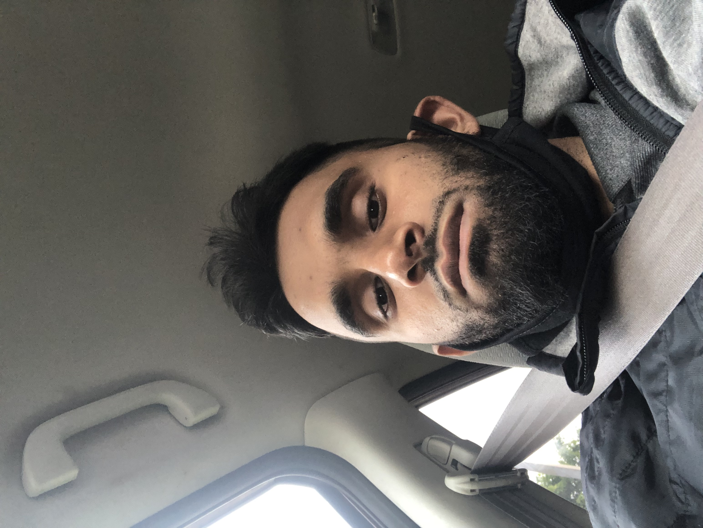

Welcome to HTML!
My First Web Page
Hi, My name is Muzammil Waris
I was born on February 25th, 1993 in Karachisiiiiiiiiiiii Pakistan. Me and my family then moved to Canada when I was five years old. I just have one sister. I love to play and watch cricket and soccer.I also like watching movies and tv shows.
These are the sport teams thatss I support:
Pakistan Cricket TeamMy favorite color is blue. Blue is also the color of Chelsea FC's home kit. My favorite players from Chelsea are Didier Drogba, Frank Lampard, Eden Hazard and Cole Palmer.
My favourite food is Pizza. I love eating Tandoori Chicken Pizza from a pizza shop near my house. Along with the pizza, I also sometimes get garlic dipping sauce and chicken wings.
I sometimes try other toppings on pizza's too. My friend once told me to get a kabob topping which I really liked the first few times but then I got used to it and didn't like it anymore
Sometimes when we go to my sister's house, we get cheese pizza because my nieces can not handle the spiciness of the other toppings. After trying out cheese topping I have got used to it and have started liking it even though its not spicy like the other pizza toppings.
I am also a hafiz-e-Quran. I memorized the Quran at the age of 17. It took my around 5-6 years. I did it in a madrassa that I used to attend in the evening. I found memorizing to be very hard but alhamdulillah I find revision easy and also enjoy it. I lead taraweeh every year in the month of Ramadan alhamdulillah.
This is one of my favorite hadiths from prophet Muhammad (pbuh).
No fatigue, illness, worry, sorrow, harm, grief, or even the prick of a thorn afflicts a Muslim except that Allah expiates some of his sins by it. (Bukhari and Muslim)
Didier Drogba who is one of my favorite footballers oncee said that
I have won many trophies in my time, but nothing will ever top helping
win the battle for peace in my country/q>